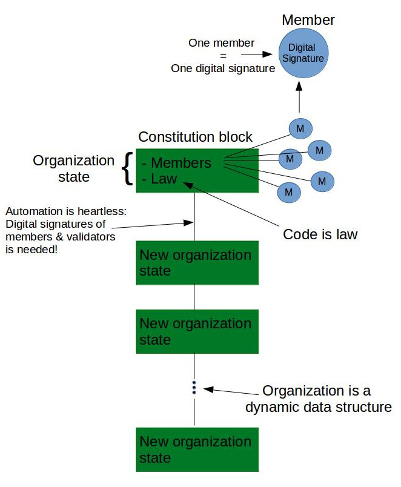

Whether it's a company a foundation or an insttitute; Cryptographic Democracy allows to manage an organization with an easy way to keep its integrity and transparencncy. Cryptographic Democracy enables easy auditing and avoid situation such as the red-cross Haiti affair.
Read MoreThe Paris agreement calls for a “Technology framework” for communication of parties, which shall be “maintained by the secretariat” as a “public registry”. Using Cryptographic Democracy is a base for this framework ensures fair treatment, completeness of data and ease-international interaction between states.
Read MoreThe holy grail of Cryptographic Democracy is a sovigern state whose members and area is distributed all over the world. But even in the current framework, managing a political party as a private blockchain, and basing its membership on digital signatures will ensure its democratization and integrity.
Read More
The abstract principles give cryptographic democracy a variety of use-cases. A few points: - Unlike public blockchains, members in cryptographic democracy are not anonymous (no sybil attacks) - Organizations must be managed as a structured data. Otherwise it is impossible to phrase laws on their allowed processes. - Since the process is managed as a permissioned blockchain, it requires validators. Validators should be members of the organization, though outsiders validators are also allowed. The list of validators is finite and know beforehand. There must be a law about changing validators. - Block time can be extremely low (up to 24 hours or more). This means that validators must not be constantly online for the blockchain to function properly. It allows a small group of validators. They can also communicate asynchronously via some centralized server or another p2p network (bitmessage for example).
Examples:
Organization:
In the wake of the Haiti earthquake in 2010, the American Red Cross raised 500 million dollars to help Haitians. Seven years later, it is difficult to know what happened to that money.
For the Red Cross to be managed as a cryptographic democracy, its structure has to be phrased as in some structured computer format. Its rules and allowed processes needs to be well defined. Then it can be assured that the 500 millions were handled at least by the organization internal logic. There would also be no question as to where the money is, since it will be like tracking a Bitcoin transaction.
International effort:
The Paris agreement establish a “Technology framework” (Article 10) for communication of parties, which shall be “maintained by the secretariat” as a “public registry” (Article 7.12).
This framework can be implemented as a cryptographic democracy in almost a complete organic way. The parties can create and ID for themselves, and it can be recognized by other in the constitution block (how a “genesis block” is called in cryptographic democracy). The rest of the process is developed democratically by voting of the parties. Data is shared among everyone, and a complete accurate record is kept transparently.
The main work in this case is done in the foundation time, in a collaboration of developers, lawyers and web-designers.
Distributed state:
The holy grail of cryptographic democracy (and modern governing suggestions in general) is a state whose members are not focused in one major geographical area, and whose holdings are distributed along the world. Cryptographic Democracy is a perfect infrastructure to support such an experiment, for example as a state for digital nomads, or for already existing efforts such as bitnation or seeland .